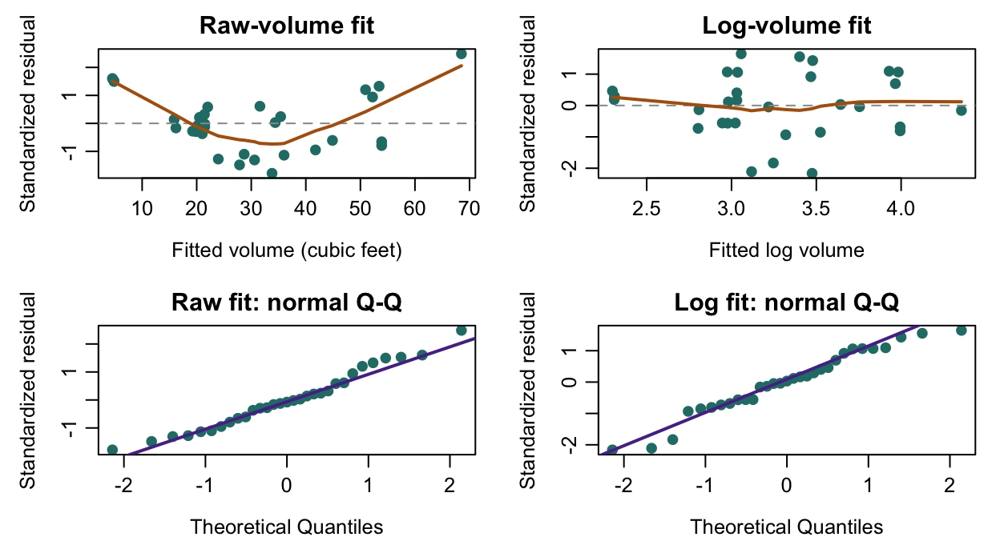

a5_trees <- transform(datasets::trees, Diameter = Girth)
a5_raw <- lm(Volume ~ Diameter + Height, data = a5_trees)
a5_log <- lm(log(Volume) ~ log(Diameter) + log(Height),
data = a5_trees)
a5_new <- data.frame(Diameter = 12, Height = 75)
a5_eta <- as.numeric(predict(a5_log, newdata = a5_new))
a5_s <- sigma(a5_log)Assignment 5
STAT 8561 | Fall 2026
Due date: Monday, December 7, 2026
Total: 40 points
Coverage: Chapter 7: Transformations and Variable Selection.
Use Chapter 7 to read the R code and interpret the supplied results. All required output is provided. You may consult the chapter. You do not need to run R or fit new models.
| Question | Topic | Points |
|---|---|---|
| 1 | Transformations, predictions, and diagnostics | 10 |
| 2 | Reading an AIC model search | 10 |
| 3 | Ridge, lasso, and cross-validation | 10 |
| 4 | Assessing prediction and finding leakage | 10 |
| Total | 40 |
Assignment PDF | Response template (.qmd) | Reproducible analysis (.R)
NoteInstructions
Use Quarto or R Markdown. Upload both files to the Assignment 5 folder on iCollege:
- Your rendered PDF, named
A5_LastName_FirstName.pdf. - Its matching source, named
A5_LastName_FirstName.qmdorA5_LastName_FirstName.Rmd.
The PDF must be generated from the submitted source. HTML alone does not satisfy the submission requirement.
- Put your name and course number at the beginning, and label every question and subpart. You may use the response template or your own layout.
- For calculations, show the expression and result. For explanations, use 1-3 sentences and refer to the code, output, or assumptions.
- Equivalent correct explanations receive credit. Give a reason when requested. Correct methods can earn partial credit despite minor arithmetic errors.
- Round numerical answers to three decimal places. Report counts as integers. Small rounding differences are accepted.
- R code and new plots are optional. Include any R code you use in executable chunks. Use
set.seed(8561)before generating random values. Answer from the supplied results. - Your source must render without errors. Use LaTeX for mathematics; do not submit screenshots of answers or code.
Question 1: Transformations and Predictions [10]
The trees data contain 31 black cherry trees. Volume is in cubic feet, and Height is in feet. Despite its name, Girth records diameter in inches. The code copies it into Diameter. These are observational data.
In R, log() is the natural logarithm. sigma() returns the residual SD on the fitted response scale.
| Term | Estimate |
|---|---|
| (Intercept) | -6.631617 |
| log(Diameter) | 1.982650 |
| log(Height) | 1.117123 |
| Quantity | Value |
|---|---|
| Predicted log volume at diameter 12, height 75 | 3.118250 |
| Residual SD of the log model | 0.081386 |
| SSE of the raw-volume model | 421.921359 |
| SSE of the log-volume model | 0.185463 |
For parts (b)-(c), assume independent normal errors on the log scale. Their mean is zero, and their variance is constant at \(\sigma^2\). Let \(Y\) be volume. Here \(\hat\eta\) is predicted log volume, and \(s\) is the residual SD on the log scale. Use
\[ \widehat{\operatorname{Median}}(Y\mid\mathbf x)=\exp(\hat\eta), \qquad \widehat{E}(Y\mid\mathbf x)=\exp(\hat\eta+s^2/2). \]
(a) Read the formula [2]. Write the population model represented by a5_log, including its error term [1]. Explain why this model is linear in its coefficients [1].
(b) Interpret the diameter coefficient [2]. Hold height fixed. Increase diameter from \(D\) to \(1.10D\). Calculate the exact percentage change in fitted median volume, showing your expression [1]. Interpret the result in one sentence [1].
(c) Back-transform [2]. For diameter 12 inches and height 75 feet, calculate the predicted median [1] and plug-in predicted mean [1]. Report both in cubic feet.
(d) Compare scales [2]. The goal is to predict mean volume in cubic feet. A student says, “The log model predicts volume better because its SSE is smaller.” Explain why these SSE values do not establish that claim [1]. Describe a fair comparison. Specify the assessment observations and the response units used to measure prediction errors [1].
Question 1 continued: Read the diagnostics
These panels compare the two models. Both use standardized residuals. Their fitted-value axes have different response scales.

(e) Read the diagnostics [2]. Choose one panel. Name a visible feature and the model concern it raises [1]. Explain why a straight Q-Q plot cannot establish independence between trees [1].
Question 2: Read an AIC Model Search [10]
The swiss data contain fertility and five socioeconomic indicators for 47 Swiss provinces around 1888. Use all 47 complete observations. All candidate models use the same Fertility response. This is an exploratory search without a test set.
a5_swiss <- datasets::swiss
a5_null <- lm(Fertility ~ 1, data = a5_swiss, na.action = na.fail)
a5_full <- lm(Fertility ~ ., data = a5_swiss, na.action = na.fail)
a5_selected <- step(a5_null,
scope = list(lower = formula(a5_null), upper = formula(a5_full)),
direction = "forward", k = 2, trace = 0)Fertility ~ . uses the five other columns as main effects. All scores below use AIC(). Smaller values are preferred.
| First-step candidate model | AIC |
|---|---|
| Intercept only | 373.725 |
| Intercept + Agriculture | 369.467 |
| Intercept + Examination | 350.353 |
| Intercept + Education | 348.422 |
| Intercept + Catholic | 364.348 |
| Intercept + Infant.Mortality | 366.768 |
| Model | SSE | AIC |
|---|---|---|
| Final forward model | 2158.069 | 325.241 |
| All five predictors | 2105.043 | 326.072 |
The final forward model retains Education, Catholic, Infant.Mortality, and Agriculture, in that order of entry. Examination is the only unused candidate.
(a) Read the search [2]. State the starting model [1]. Can this code remove a term after adding it [1]?
(b) Take the first step [2]. Which term is added first [1]? Calculate its AIC decrease from the intercept-only model [1]. Report the decrease as a positive number.
(c) Explain the stopping decision [2]. Should the search add Examination next? Justify your decision using AIC [1]. Explain why the lower full-model SSE is insufficient [1].
(d) Evaluate inference [2]. A student reports a p-value from summary(a5_selected). Explain why selecting the model with these same outcomes affects its usual interpretation [1]. Give either a cautious interpretation or a plan to test the association using independent data [1]. No new test or p-value is required.
(e) Evaluate the search claim [2]. Does this search guarantee the lowest AIC among all predictor subsets [1]? Explain using the permitted search moves [1].
Reading: Section 7.4: variable selection.
Question 3: Ridge, Lasso, and Cross-Validation [10]
A simulation has 120 independent observations and six sensor predictors. Sensors x1 and x2 are correlated. The script uses set.seed(8561).
a5_dat: all 120 observations.a5_train: 90 observations for model development.a5_test: 30 observations for final assessment.
The 90 development observations form five groups of 18. Each CV iteration validates on one group and fits on the other four. The 30 test observations are not used for tuning.
library(glmnet)
a5_xtrain <- model.matrix(y ~ ., data = a5_train)[, -1]
a5_xtest <- model.matrix(y ~ ., data = a5_test)[, -1]
a5_lasso <- cv.glmnet(a5_xtrain, a5_train$y,
family = "gaussian", alpha = 1, intercept = TRUE,
foldid = a5_folds,
lambda = c(0.80, 0.40, 0.20, 0.10, 0.05),
standardize = TRUE, type.measure = "mse")
a5_ridge <- cv.glmnet(a5_xtrain, a5_train$y,
family = "gaussian", alpha = 0, intercept = TRUE,
foldid = a5_folds,
standardize = TRUE, type.measure = "mse")The lasso uses only the five penalties listed below. Select its lambda from this grid. Ridge uses its default penalty grid. Both methods use the same folds.
| Lambda | CV MSE | CV SE | Nonzero slopes |
|---|---|---|---|
| 0.80 | 4.835 | 1.212 | 2 |
| 0.40 | 3.794 | 0.835 | 2 |
| 0.20 | 3.124 | 0.641 | 3 |
| 0.10 | 2.887 | 0.488 | 5 |
| 0.05 | 2.859 | 0.430 | 5 |
lambda.min gives the lowest CV MSE. For the one-SE rule, add the SE at that minimum to the minimum MSE. Keep rows whose CV MSE is at or below this threshold. Their largest lambda is lambda.1se.
(a) Read the inputs [2]. Which column does [, -1] remove from model.matrix() [1]? Does the fitted model still have an intercept? Explain using intercept = TRUE [1].
(b) Apply the one-SE rule [3]. Report lambda.min [1], the one-SE MSE threshold [1], and lambda.1se [1].
Question 3 continued: Read the coefficients
Each column below uses all 90 training observations at the indicated penalty. Coefficients are in the original sensor units. Zeros are exact; other entries are rounded to three decimals.
| Term | Ridge: one-SE | Lasso: minimum | Lasso: one-SE |
|---|---|---|---|
| (Intercept) | 2.072 | 2.040 | 2.107 |
| x1 | 1.144 | 1.839 | 1.304 |
| x2 | -0.440 | -1.083 | -0.504 |
| x3 | 0.854 | 1.057 | 0.901 |
| x4 | 0.142 | 0.070 | 0.000 |
| x5 | -0.026 | 0.000 | 0.000 |
| x6 | -0.145 | -0.136 | 0.000 |
(c) Shrinkage and selection [2]. List the sensors with nonzero coefficients in the one-SE lasso [1]. Use the table to explain how ridge and lasso differ in variable selection [1]. Exclude the intercept.
(d) Read standardize = TRUE [2]. Why can changing predictor units change a coefficient penalty [1]? During CV, which observations should determine the centring and scaling [1]? Assume the inputs have not already been standardized.
(e) Read alpha [1]. Replace alpha = 1 with alpha = 0.5. Name the penalty family and explain what 0.5 controls [1]. Lambda is still tuned at this fixed alpha.
Reading: Section 7.5: ridge, lasso, and elastic net. The glmnet CV documentation describes the supplied R arguments.
Question 4: Prediction Assessment and Leakage [10]
Continue the sensor example. Before examining a5_test$y, the analyst chooses the one-SE lasso. The code evaluates it once on the 30 test observations. The baseline predicts the training-response mean.
a5_pred <- as.numeric(predict(a5_lasso,
newx = a5_xtest, s = "lambda.1se"))
a5_rmse <- sqrt(mean((a5_test$y - a5_pred)^2))
a5_baseline <- sqrt(mean((a5_test$y - mean(a5_train$y))^2))| Procedure | Test RMSE |
|---|---|
| Prespecified one-SE lasso | 1.270 |
| Training-mean baseline | 1.612 |
(a) Track the observations [2]. In one CV iteration, one group is reserved for validation. How many observations remain for estimating coefficients [1]? How many observations fit the final model used by predict() [1]?
(b) Interpret the result [2]. Which procedure has lower test RMSE? Calculate the difference [1]. Explain what this result shows and give one limitation of using a single test sample [1].
(c) Find and repair leakage [3]. Read this flawed workflow. It uses the same data and split.
all_fit <- lm(y ~ ., data = a5_dat)
chosen <- step(all_fit, direction = "backward", trace = 0)
refit <- lm(formula(chosen), data = a5_train)
pred_bad <- predict(refit, newdata = a5_test)a5_dat contains both training and test data. Which step lets test outcomes affect the chosen formula [1]? Why does refitting the coefficients not remove that problem [1]? Give a corrected sequence from splitting the data to final assessment [1]. Use prose or pseudocode.
(d) Reusing the test set [2]. The analyst now tries many alpha values. They keep whichever has the lowest RMSE on the same 30 test cases. Why is this no longer an independent final assessment [1]? Describe one valid plan for tuning and evaluating the revised procedure [1].
(e) Compare error scales [1]. Question 3 reports CV MSE; Question 4 reports test RMSE. State their units relative to the response. Explain how to put them on comparable numerical scales.